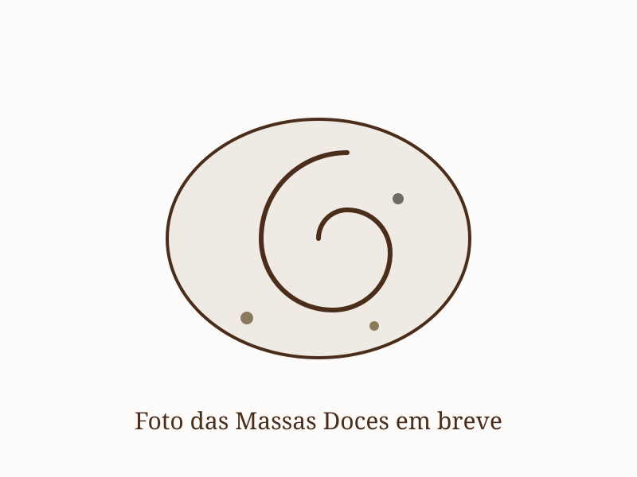

Curso de Massas Doces
sábado, 14/11/2026 · 14h às 19h · ver agenda →Uma massa só. Sete produtos. Você vai misturar, modelar e assar pão de leite, pão de hambúrguer, rosca, cuca, brioche, cinnamon roll e babka — tudo da mesma massa, com fermentação longa e tempo de verdade. Aula teórico-prática, com apostila em PDF, planilha de custo e degustação. Vamos botar a mão na massa?

O que você vai viver
Manhã de massa e forno
- Vai preparar uma massa doce com as próprias mãos — e transformar ela em sete produtos diferentes
- Vai entender o que muda entre um pão de leite e um cinnamon roll: formato, recheio, cobertura e tempo de forno
- Vai aprender a fermentação longa na geladeira, de 12 a 24 horas, com fermento biológico — e ver como adaptar a mesma massa para fermento natural
- Vai levar a massa que misturou para assar em casa, com a sua assinatura
O que está incluso
- Apostila em PDF com teoria, receitas e os sete formatos
- Grande café da manhã com nossos pães artesanais
- Todos os ingredientes e materiais para a aula
- A massa que você misturou, para levar e assar em casa
- Formas descartáveis para os produtos
- Planilha de custo e precificação para vender
Traga sua bebida favorita
Se quiser, traga sua bebida favorita: um vinho, um espumante ou uma cerveja especial para acompanhar o café da manhã e a conversa. A bebida não está inclusa na oficina, mas combina com uma manhã gostosa de massa quentinha e gente reunida.
Onde é?
No quintal da nossa casa — o mesmo lugar onde nasceu a Pão de Verdade. Um ambiente de plantas, cerâmica, madeira, forno e calma, onde a gente aprende fazendo.
📍 Rua Mário Pinto Sobrinho, 176 — Santa Mônica, Uberlândia (casa verde)
Pra quem é
Pra quem já fez pão e quer aprender doce. Pra quem quer uma vitrine que vende: cuca, rosca, cinnamon roll. Pra quem quer fornecer pão de hambúrguer para hamburgueria. E pra quem só quer um sábado gostoso com massa, açúcar e forno.
Pagamento seguro via Mercado Pago — Pix ou cartão em até 12x. A vaga é confirmada pelo WhatsApp.
💬 Garantir minha vaga — R$275 Ver agendaQuer fazer Pão e Massas Doces no mesmo dia? Em 14/11 o Pão é de manhã (8h às 13h) e Massas Doces à tarde (14h às 19h). Cada curso é uma vaga. Reserve também a vaga do Pão.
Turmas pequenas, 10 vagas. Confirmação da inscrição após o pagamento.
O que sai da mesma massa
O que muda entre eles é o formato, o recheio, a cobertura e o tempo de forno. A massa é a mesma — e é isso que você aprende a dominar.
Pão de leite
A massa no seu jeito mais simples: bolinha macia, levemente doce.
Pão de hambúrguer
Disco alto, ovo e gergelim. Aguenta hambúrguer de verdade.
Rosca
Trançada ou recheada, do café da manhã ao presente.
Cuca
Massa doce com streusel — o doce mais lembrado da nossa casa.
Brioche
A mesma massa modelada em nanica: macia, amanteigada, sem recheio.
Cinnamon roll
Rolo de canela com glacê de cream cheese.
Babka
Rolo cortado e trançado, com chocolate. O mais bonito da mesa.
Ficou com alguma dúvida?
Preciso ter experiência para participar?
É uma massa só mesmo? Como saem sete produtos?
A massa é de fermento natural ou biológico?
Fermento biológico não é coisa de padaria industrial?
O que eu levo pra casa?
Preciso de forno ou equipamentos profissionais?
Preciso de batedeira?
Serve para quem quer vender?
Vou aprender panetone?
Posso fazer Pão e Massas Doces no mesmo dia?
Qual é a data e o horário?
Preciso levar alguma coisa?
Uma massa. Sete produtos. Um sábado.
Você sai com a massa na mão, os sete produtos na memória e uma vitrine inteira pra repetir em casa. Ficou com alguma dúvida? Chama a gente no WhatsApp.
Ficou alguma dúvida? Fale comigo